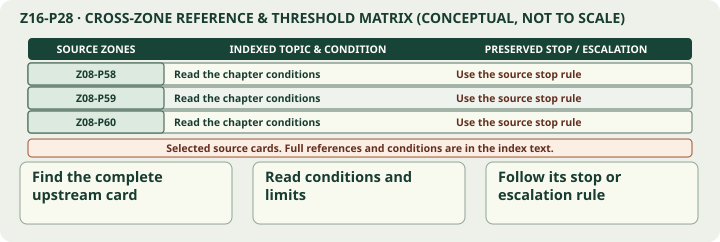

Z16-P28 · Field reference atlas · New manuscript
Mineral Dust, Asbestos Fibers, Lead Soil and Toxic Ore Index
Locate the original encyclopedia cards for mineral Dust, Asbestos Fibers, Lead Soil and Toxic Ore Index.
When it applies · Offline reference lookup. The linked chapter defines the situation, audience and limits.
Equipment · Offline reader or the complete linked source cards in print.

Actions
- Open Z08-P58 for crystalline Silica Dust Controls in Authorized Stone Work; Z08-P59 for naturally Occurring Asbestos and Elongated Mineral Fibers.[A10, R06, R07]
- Open Z08-P60 for heavy-Metal Dust Hygiene and Post-Field Decontamination; Z08-P27 for soil Contamination, Lead and Tailings Exclusion Screening; Z08-P53 for separating Visual Material Recognition from Food-Contact Safety.[A10, R12]
- Read the linked card’s applicability, equipment and stop conditions together. Keep review and source limitations attached to any excerpt.[A10, ED]
Failure recognition · Acting on a keyword or title while overlooking an upstream exception or stop condition.[A10, ED]
Verify · Confirm the exact page ID and read the full conditions before using the reference.[A10, ED]
Stop or change course · If the situation falls outside a linked card’s conditions or its stop rule applies, stop using this index as a decision aid. Follow the full card and current local directions.[A10, ED]
Evidence and editorial notes
- A10 · FEMA / Ready.gov · Make a Plan (current web edition)
- Section: Offline reader navigation, historical lineage, and HOLD transparency · Conditions: Using the complete 16-zone offline archive, zone readers, and print proofs
Support: Navigation aids expose draft status, reconstruction lineage, open diagnostic photo needs, and pending specialist holds on every lookup path.
Limitations: This index entry does not independently establish any safety, regulatory or diagnostic instruction. · Conflicting evidence: None noted.
Editorial note: Index design and cross-reference policy. Substantive directions come from linked upstream chapter claims. · Specialist reviewer: Accessibility, print QA, and editorial reviewer
Primary source · checked 2026-11-24 - R06 · NIOSH / CDC · Crystalline Silica Respiratory Dust Hazards (2024)
- Section: Overview; Exposure · Conditions: Silica-bearing material disturbed by cutting, grinding, or similar dust-producing work
Support: Respirable crystalline silica exposure can cause silicosis and other disease. Avoid creating dust during field recognition.
Limitations: Hazardous particles may be invisible. Wind, casual wetting and a mask alone do not establish exposure control. · Conflicting evidence: Conditions are recorded in the A03 audit.
Editorial note: Mandatory Z08 silica/eye safety gate. · Specialist reviewer: Industrial hygienist and geologist
Primary source · checked 2026-11-25 - R07 · U.S. EPA · Learn About Asbestos and Naturally Occurring Mineral Fibers (2025)
- Section: Naturally occurring asbestos and fibrous minerals · Conditions: Outcrops, fibrous veins, serpentinite, and iron-formation rock
Support: Naturally occurring asbestiform mineral fibers pose severe inhalation risks if disturbed, broken, or abraded.
Limitations: Field sight alone cannot distinguish benign fibrous minerals from regulated asbestos; leave fibrous mineral veins undisturbed. · Conflicting evidence: None noted.
Editorial note: Mandatory Z08 mineral-fiber stop rule. · Specialist reviewer: Industrial hygienist and mineralogist
Primary source · checked 2026-11-25 - R12 · U.S. EPA · Protect Your Family from Lead in Soil and Dust (2025)
- Section: Soil contamination and urban/industrial lead hazards · Conditions: Soils near historic structures, roadways, mines, or industrial sites
Support: Soils and clays near older painted structures, smelters, tailings, or roadways may harbor lead or industrial contaminants.
Limitations: Visual texture or color cannot detect lead, arsenic, or chemical contaminants; do not use unverified soil/clay for cookware or food contact. · Conflicting evidence: None noted.
Editorial note: Separates clay plasticity checks from chemical safety. · Specialist reviewer: Environmental health and soil scientist
Primary source · checked 2026-11-25
Source lineage · New manuscript (Z16 P20 hazard index) · Classification · New manuscript.